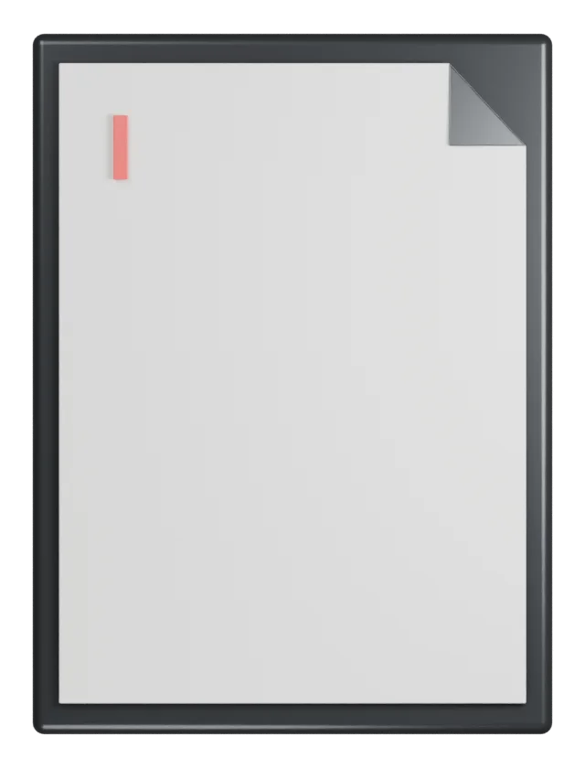
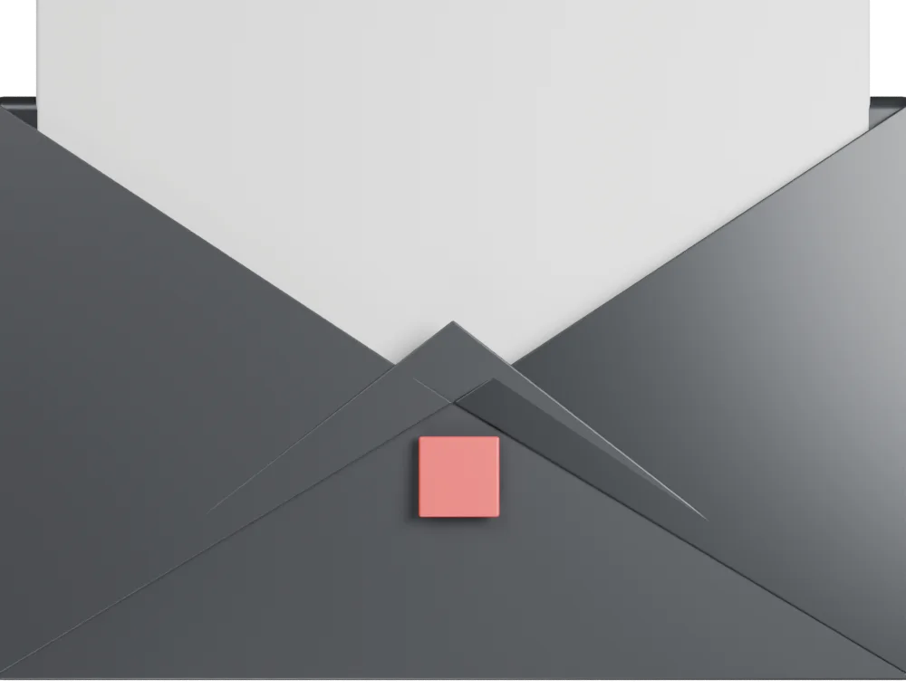
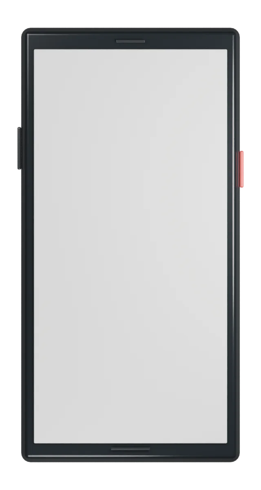

Look at the actual request.
Understand the words, destinations and conditions that deserve a second look. Keep the original content alongside the evidence.
A little context before your next move. Nivoryn helps you inspect suspicious links, messages and files, with supported checks on-device.
Download APKOpen source · Android 8.0+
Early-access test build · 87 MB download.

Asha Demo
DEMO-4821


“Pay a fee to release your earnings.”
Pause the payment. Verify the employer independently.
Authored example. No detection engine ran.A warning should tell you why.
“Pay a fee to releaseUpfront payment pressure
your earnings.”
Money is being made a condition of receiving money.
Understand the words, destinations and conditions that deserve a second look. Keep the original content alongside the evidence.
Nivoryn is designed for on-device checks. This frontend shows authored examples; it does not yet analyse your own content.
A readable ticket is not a confirmed booking. Sender identity, live reputation and issuer records can require independent, connected verification.
Four kinds of content. A closer look at each.
These are authored examples, not live checks.
Your Bank https://your-bank.support-check.example/login
The familiar name is a subdomain. It does not establish who controls support-check.example.
Ownership and live reputation have not been checked. This example never opens the URL.
Mode: Authored link example. No network lookup.
Explore the Android appThe payment is made a condition of receiving promised income. Pause before sending money.
The sender’s identity and the promised earnings remain unverified.
Mode: Authored example. No detection engine ran.
Explore the Android appACCOUNT NOTICE Your account will be blocked today. Share your OTP to continue.
An OTP can authorise account access or a transaction. A screenshot does not make the request trustworthy.
OCR, image authenticity and sender verification are not implemented in this frontend.
Mode: Authored screenshot text. Not OCR output.
Explore the Android appEXAMPLE TICKET Passenger: Asha Demo Booking ID: DEMO-4821 Booking status: unverified
Readable fields do not prove a valid booking. Missing signatures alone do not establish forgery.
No signature, issuer database or live booking check has run.
Mode: Authored document specimen. Not a file scan.
Explore the Android appImported files stay on your device. Drafts remain in the app session; saved example cases use app-private storage. You can delete saved cases from Settings.
This website sends no content to an analysis service and uses no tracking cookies. The website shows authored examples. The Android app runs local checks and can use Llama after verified model import; connected verification is unavailable.
Read the privacy detailsThe Android app runs limited local text/link rules, bundled OCR and QR decoding. These checks do not prove safety. The website only shows authored examples; it does not accept uploads or run checks.
No. Warning signs are context, not guarantees. Offline checks cannot confirm a live booking, prove issuer authenticity or detect every scam or manipulated image or voice.
Download the signed early-access APK for Android 8.0 or newer. Version 0.1.1 is a development test build, not a production release. Open the downloaded file on Android and allow installation from your browser or Files app when prompted.
Nivoryn for Android.
Open source. Offline-first by design.
Early-access test build 0.1.1 · Android 8.0+ · 87 MB
Offline checks. No account required.
Llama needs a separate local model import.
Verify APK checksum · Source repository